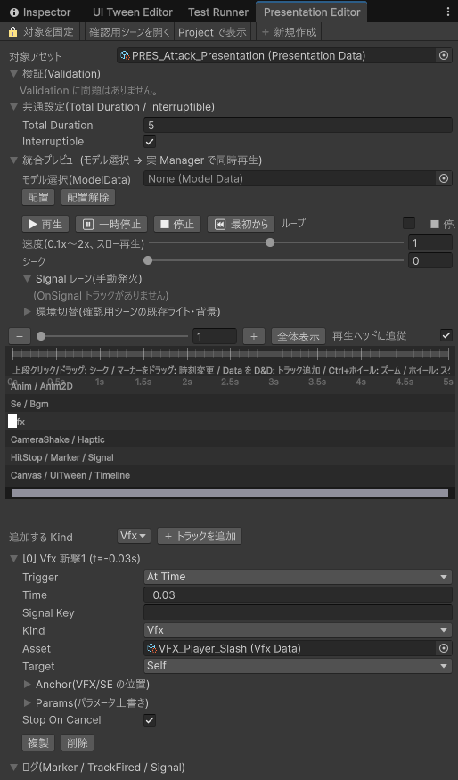

「剣攻撃」のように、アニメ・効果音・エフェクト・カメラ揺れ・振動・画面停止（ヒットストップ）などを 1 つにまとめたものが「演出（PresentationData）」です。プログラマーは Presentation.Play(演出のID, ...) と 1 行書くだけで、中身（何を・いつ・どう鳴らすか）はすべてこのデータで決まります。あとから演出の中身を差し替えても、プログラムの修正は不要です。
Tools > D-Drive > Presentation Editor（目玉機能につき Tools メニュー最上段）でトラックをタイムライン形式で編集し、実際にアニメ・SE・エフェクト・画面揺れ・振動を同時に再生して確認しながら作れます。使い方は下の「専用エディタの使い方」を参照してください。
演出は「トラック」という短い指示の集まりでできています。1 本のトラックは「いつ」「何を」の 2 つを決めます。
| 項目 | 説明 |
|---|---|
| Trigger（いつ） | At Time: 再生開始から何秒後に鳴らすか(Time 欄に秒数)。0 秒は「開始と同時」。 On Signal: プログラム側が「合図（例: 攻撃が当たった）」を送ってきたら鳴らす。Signal Key 欄に合図の名前(例: hit)を入れる。 |
| Kind（何を） | 下記「トラックの種類」参照。 |
| Asset（何のデータを） | Kind に応じた ID(例: Kind=Vfx なら VfxData の ID)。Marker/Signal/HitStop は不要。 |
| Target（基準になる場所） | Self: 演出を出した本人(例: 攻撃した本人)。Context Target: 相手(例: 攻撃を受けた敵)。World / Anchor: 場所を固定したい据え置きの演出向け(下の Anchor 欄の位置をそのまま使う)。 |
| Anchor | VFX・SE を出す細かい位置(ボーン名や右手・足元など)。Anchor のページと同じ形式。 |
| Params | Kind ごとの追加パラメータ(例: Kind=HitStop なら「何秒止めるか」を 1 つ目に入れる)。Kind=Vfx のときは、そのエフェクト側(VfxData の Params)と同じ並び順(ラベル名の順番=インデックス)の値を上書きします(色を差し替える、など)。Kind=Se の音量上書きにはまだ対応していません(値を入れても音量には反映されません)。他の Kind では今のところ使われません。 |
| Stop On Cancel | 途中で演出が中断された(Cancel された)とき、このトラックで出した物(VFX・SE 等)も一緒に止めるか。オフなら鳴らし切る。 |
| Kind | 内容 | 今の対応状況 |
|---|---|---|
| Anim / Anim2D | アニメーションを再生する | 対応済み |
| Se / Bgm | 効果音 / BGM を鳴らす | 対応済み |
| Vfx | エフェクトを出す | 対応済み |
| Canvas | UI 画面(ポップアップ等)を開く | 対応済み |
| UiTween | UI の動き(UI Tween)を再生する | 対応済み |
| HitStop | 一瞬だけゲーム全体の時間を止める(「ヒットストップ」演出)。Params の 1 つ目に止める秒数を入れる | 対応済み |
| Marker | プログラム側に「ここまで来た」を知らせるだけの目印(見た目には何も起きない)。Signal Key 欄が目印の名前になる | 対応済み |
| Signal | プログラム側の処理を直接呼び出すための合図(Marker と似ているが、コード側の受け取り方が違う)。Signal Key 欄が合図の名前になる | 対応済み |
| CameraShake | 画面を揺らす。Asset 欄にカメラシェイクのデータの ID を入れる | 対応済み |
| Haptic | コントローラーを振動させる。Asset 欄に振動データの ID を入れる | 対応済み |
| Timeline | Unity Timeline を再生する(カットシーン向け) | 未対応(近日実装予定) |
| 項目 | 説明 |
|---|---|
| Total Duration | 演出全体の長さ(秒)。0 のままにすると、At Time トラックの一番遅い時刻から自動で決まります。「On Signal のトラックだけ」で組んだ演出は、この自動計算だと 0 秒扱いになりすぐ終わってしまうため、必ず秒数を入れてください。0 のままにしている間はタイムライン右上に小さく「⚠ 尺が未設定です」と出ます。共通設定の警告にある「トラックの最後に合わせる」ボタンを押すと、各トラックの終わりの時刻(アニメ・効果音は長さも考慮)に合わせて自動で数値を入れてくれます。 |
| Interruptible | 途中で中断(Cancel)できるか。オフにすると、プログラム側が止めようとしても無視されます(最後まで再生し切る前提の演出向け)。 |
Tools > D-Drive > Presentation Editor を開き、対象アセット欄に演出データ（新規なら「＋ 新規作成」）を選びます。

Assets/GameData/PreviewScenes/PresentationSkillSlashPreviewScene.unity を開いて Play すると、剣攻撃の演出(アニメ相当の代わりに VFX+SE を Self に配置、当たった合図で画面停止+SE+画面揺れ+振動)が自動で再生されます。P キーでもう一度再生、Space キーで「当たった」合図(Signal)、C キーで中断(Cancel)を試せます。
演出データの Flags > Net を Cosmetic(「見た目だけで勝敗には影響しない」の意味)にしておくと、通信対戦時にプログラム側の特別な配線なしで自分が再生した演出が相手の画面にも自動で配られ、同じタイミングで再生されます。既定値は Local(自分の画面だけ)なので、相手にも見せたい演出は Flags.Net を Cosmetic に変える必要があります(通常の攻撃演出などは Cosmetic にしておくのが基本です)。
| 警告 | 意味と直し方 |
|---|---|
| トラック N(Kind)の Asset が未設定です | そのトラックが使う ID(VfxData など)を設定してください。Marker/Signal/HitStop は対象外です。 |
| SignalKey が空です | On Signal トラック、または Marker/Signal の名前欄が空です。半角英数字などで名前を入れてください。 |
| Time が Total Duration を超過しています | そのトラックが鳴る前に演出全体が終わってしまいます。Total Duration を伸ばすか、Time を短くしてください。 |
| Interruptible=false ですが尺が長すぎます | 10 秒を超える演出を「中断不可」にすると、プレイヤーを長時間拘束してしまいます。本当に中断不可でよいか見直してください。 |